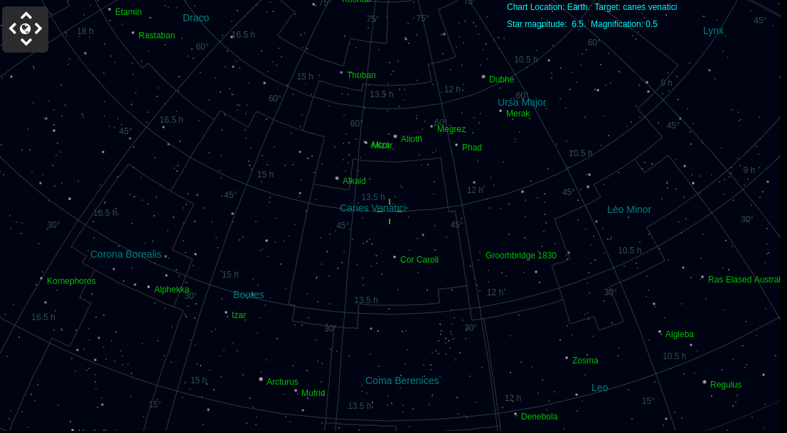
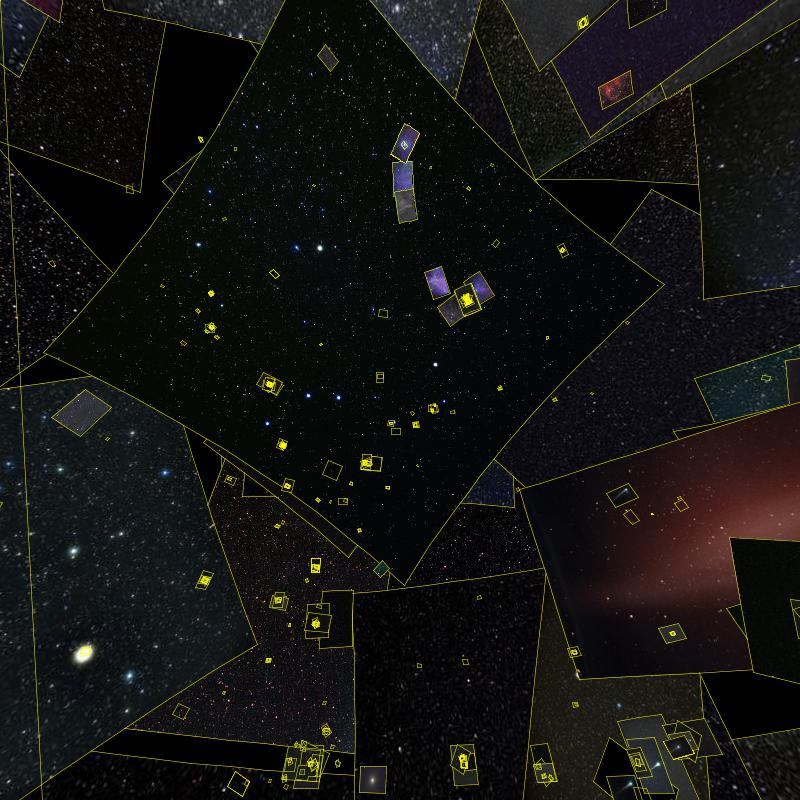
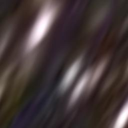

https://www.youtube.com/GitHub GITHUB Universe
https://github.com/Erik123452
https://www.wikisky.org/starview?object_type=1&object_id=748330&object_name=HIP+65221&locale=PT
https://www.wikisky.org/?img_source=IMG_906659:all&ra=13.366437&de=40.30189&zoom=-4&show_box=1&box_ra=13.366437&box_de=40.30189&box_width=50&box_height=50

https://endeavour.astronexus.com/endv.php
https://www.wikisky.org/snapshot?ra=11.802469193787726&de=56.8024159249413&zoom=1&show_grid=1&show_constellation_lines=1&show_constellation_boundaries=1&show_const_names=0&show_galaxies=1&show_box=1&box_ra=13.366437&box_de=40.30188999999999&box_width=50&box_height=50&img_source=IMG_906659:all
Laren 21 november 2024 8:05
Venus - https://www.wikisky.org/snapshot?ra=18.810169617821607&de=-25.347956267025758&zoom=1&show_grid=1&show_constellation_lines=1&show_constellation_boundaries=1&show_const_names=0&show_galaxies=1&show_box=1&box_ra=18.810175654890955&box_de=-25.347950482937883&box_width=50&box_height=50&img_source=IMG_906659:all
Mercury https://www.wikisky.org/snapshot?ra=17.312407030274912&de=-25.441171906150917&zoom=1&show_grid=1&show_constellation_lines=1&show_constellation_boundaries=1&show_const_names=0&show_galaxies=1&show_box=1&box_ra=17.312409752125856&box_de=-25.44116866358895&box_width=50&box_height=50&img_source=IMG_906659:all
Pluto https://www.wikisky.org/snapshot?ra=20.171981547091775&de=-23.40173221039836&zoom=1&show_grid=1&show_constellation_lines=1&show_constellation_boundaries=1&show_const_names=0&show_galaxies=1&show_box=1&box_ra=20.171981639076552&box_de=-23.401731933666994&box_width=50&box_height=50&img_source=IMG_906659:all
Zon https://www.wikisky.org/snapshot?ra=15.79381609955501&de=-19.962300112125977&zoom=1&show_grid=1&show_constellation_lines=1&show_constellation_boundaries=1&show_const_names=0&show_galaxies=1&show_box=1&box_ra=15.793821764379837&box_de=-19.96231788215789&box_width=50&box_height=50&img_source=IMG_906659:all
jupiter https://www.wikisky.org/snapshot?ra=5.138871983124663&de=22.19664443761681&zoom=5&show_grid=1&show_constellation_lines=1&show_constellation_boundaries=1&show_const_names=0&show_galaxies=1&show_box=1&box_ra=5.138871575191975&box_de=22.19664399469982&box_width=50&box_height=50&img_source=IMG_906659:all
Uranus https://www.wikisky.org/snapshot?ra=3.4964121825296903&de=18.694307069399112&zoom=5&show_grid=1&show_constellation_lines=1&show_constellation_boundaries=1&show_const_names=0&show_galaxies=1&show_box=1&box_ra=3.4964121166558377&box_de=18.694306839611123&box_width=50&box_height=50&img_source=IMG_906659:all
Neptune https://www.wikisky.org/snapshot?ra=23.842206835417546&de=-2.4542384466158293&zoom=5&show_grid=1&show_constellation_lines=1&show_constellation_boundaries=1&show_const_names=0&show_galaxies=1&show_box=1&box_ra=23.842206808399382&box_de=-2.454238593946818&box_width=50&box_height=50&img_source=IMG_906659:all
saturnus https://www.wikisky.org/snapshot?ra=22.971824236547402&de=-8.83301556827482&zoom=5&show_grid=1&show_constellation_lines=1&show_constellation_boundaries=1&show_const_names=0&show_galaxies=1&show_box=1&box_ra=22.971824249363415&box_de=-8.83301541893022&box_width=50&box_height=50&img_source=IMG_906659:all
mars https://www.wikisky.org/snapshot?ra=8.477976785210878&de=21.257230000243567&zoom=5&show_grid=1&show_constellation_lines=1&show_constellation_boundaries=1&show_const_names=0&show_galaxies=1&show_box=1&box_ra=8.477977105551016&box_de=21.257229862119196&box_width=50&box_height=50&img_source=IMG_906659:all

canes venatici

draco
deneb